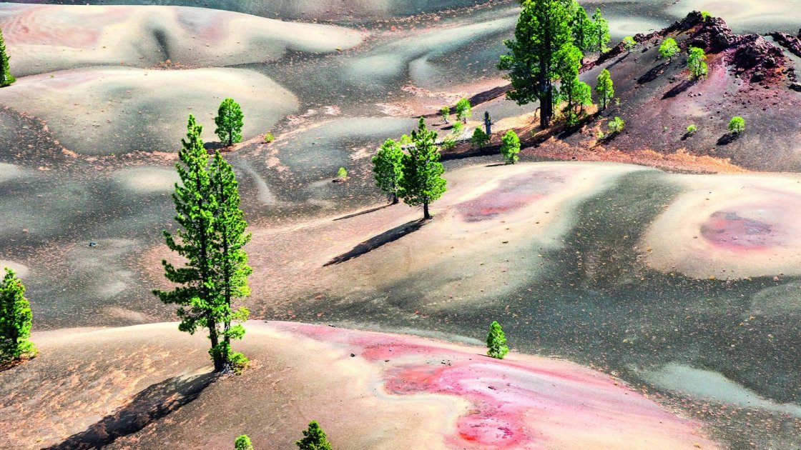

<h2>8. Разноцветные дюны в парке Лассен, США</h2>
А это разноцветное геологическое формирование уже давным-давно заслужило славу одного из красивейших мест мира. Дюны расположены у конуса древнего спящего вулкана на территории национального парка Лассен.
</br>

</br>
Их необычная расцветка появилась из-за окисления пепла, оседавшего прямиком на потоки лавы во время извержения.
</br>